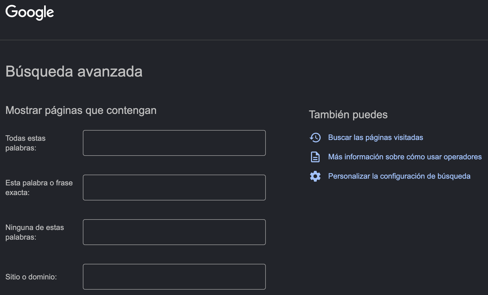
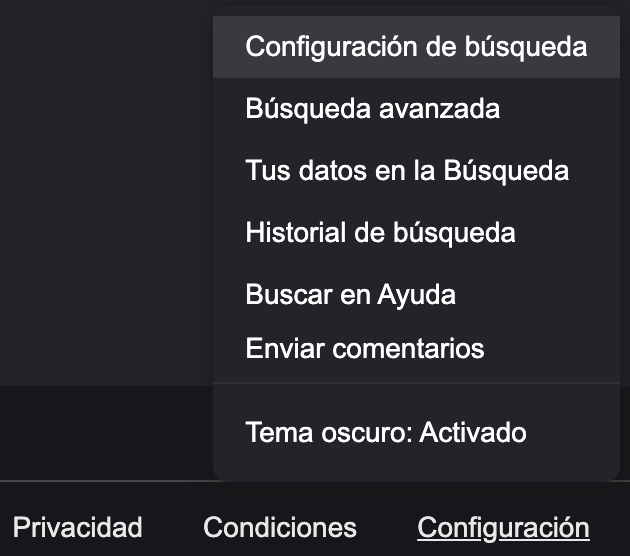
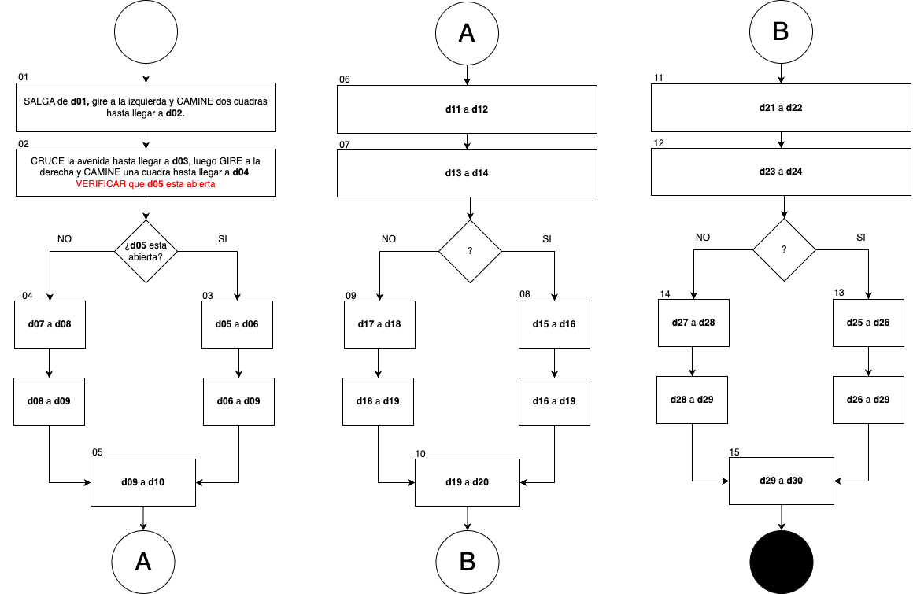

Guía 1112: Diagramas de flujo (P1)
|
|

Temática: Diagramas de flujo, instrucciones.
Objetivo de aprendizaje: Reconocer y diferenciar la simbología estándar (ANSI/ISO) utilizada en los diagramas de flujo (inicio, proceso, decisión, entrada/salida).
Componente: Solución de problemas con T&I.
Competencia: Propongo innovaciones tecnológicas e informáticas para la solución de problemas dando cumplimiento a restricciones, condiciones y especificaciones técnicas y contextuales.
Evidencia de aprendizaje: Propongo, analizo y comparo diferentes soluciones a un mismo problema de la tecnología o la informática, explicando su origen, ventajas y dificultades.
Actividades desarrolladas en su totalidad.
Participación en clase.
Explicación clara de conceptos.
Argumentación de ideas.
Cumplimiento de las reglas del aula.
Mensaje del autor
“En esta guía, el estudiante aprenderá que la simbología estándar (ANSI/ISO) es el lenguaje universal para modelar soluciones. Al dominar el uso de inicios, procesos y decisiones, será posible proponer y comparar diferentes caminos para resolver un mismo problema, y así analizar la ruta más eficiente.”
—Camilo Fonseca
A00: Introducción (+0,3)
Exploración
TRANSCRIBA en su cuaderno el objetivo, las orientaciones curriculares y los criterios de evaluación de la presente guía.
LEA el mensaje del autor y en su cuaderno responda:
¿Qué es el estandar (ANSI/ISO)? (consulte en INTERNET)
¿Qué entiende por proceso?
¿Qué entiende por decisión?
Para usted, ¿Qué es ser eficiente?
A01: Diagramas de flujo (+0,7)
Estructuración
En su cuaderno responda las siguientes preguntas:
¿Qué es una instrucción?
¿Por que la claridad, la eficiencia y la seguridad son importantes al momento de dar instrucciones?
En su cuaderno escriba una serie de instrucciones (seguras, claras y eficientes) para que un estudiante vaya al colegio desde que se despierta hasta que llega al aula de clase.
En su cuaderno describa cada una de las figuras de un diagrama de flujo y dibuje sus símbolos.
A02: Orientaciones al extranjero (+1,0)
Transferencia
Lea el siguiente caso:
“Suponga que un extranjero visita Puerto Boyacá y quiere hacer turismo en el pueblo. El extranjero se encuentra en las afueras del hospital JOSE CAYETANO VASQUEZ y quiere conocer cada una de las iglesias católicas en Puerto Boyacá.”
Iglesia San José Obrero (Barrio la Paz).
Iglesia San Pedro Claver (Centro).
Iglesia Cristo Rey (Cra 4a, Calle 5).

Mapa Puerto Boyacá
En su cuaderno, cree un diagrama de flujo con 15 instrucciones que le permitan al extranjero llegar a cada una de las iglesias. Tenga en cuenta lo siguiente:
5 instrucciones por iglesia (15 instrucciones).
2 direcciones por instrucción (30 direcciones).
Cree un inventario de las 30 direcciones por medio de variables así:
d01 = "Hospital José Cayetano Vasquez, (Cra 5 con calle 29)" d02 = "UPTC, (Cra 5 # 25 - 2)" d10 = "Iglesia San José Obrero, (Calle 28 # 3A - 54)" d20 = "Iglesia San Pedro Claver, (Calle 14 # 3 - 21)" d30 = "Iglesia Cristo Rey, (Cra 4a con calle 5)"
Cada instrucción(operación) debe describir como ir de una dirección A a una dirección B. Por ejemplo:

Diagrama de flujo: Orientaciones al extranjero
Usar una página de cuaderno por cada diagrama.
Para identificar las direcciones, se recomienda usar Google Maps.
No olvide que el extranjero prefiere caminar.
Antes de orientar al extranjero para ir a una nueva dirección, siempre verificar la ubicación actual para evitar que el extranjero se teletransporte por error.
{kind=link}
{kind=link}
A03: Orientaciones seguras (+3,0)
Transferencia
En su cuaderno, adapte el algoritmo de la actividad anterior, de tal forma que contenga 3 condicionales.
Los condicionales permitiran al extranjero tomar caminos alternos en caso de la ocurrencia de algún evento inesperado (vías cerradas, semáforos en rojo, perros bravos, negocios cerrados, etc.).
Por ejemplo:

Diagrama de flujo: Instrucciones seguras
Usar una página de cuaderno por cada diagrama.
{kind=link}